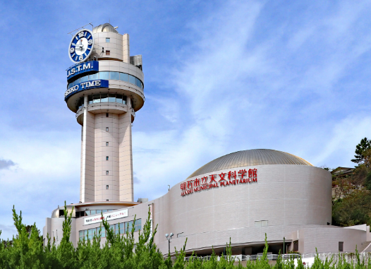

兵庫県明石市は、日本の時間を決める東経１３５度に位置することで よく知られています。その東経１３５度日本標準時子午線の真上に 建つ「明石市天文科学館」を紹介します。こちらは「時と宇宙の博 物館」となっており、プラネタリウムや展示を見ることができます。 また、３６０度展望台では世界最長のつり橋「明石海峡大橋」や明石 城の櫓などを眺めることができます。日本に１か所しかない標準 時子午線上にある科学館、ぜひ行かれてください。
明石には「明石焼き」という名物があります。見た目から「たこ焼き と同じではないか」と思われる方がいらっしゃるかもしれませんが、 全く違います！明石焼きの生地は玉子でできており、豆腐のように 柔らかくとろけます。中にはおいしい「明石だこ」が入っており、 非常に満足感があります！お店に行くと、板に乗ったほかほかの明石焼きとソースの入った壺、 温かいだしが提供され、私たちはそれらを好きなようにつけて 明石焼きを楽しむのです。